Round 11 — the compact screen, reorganized
The pick request. A, the bundle (recommended): chat floor 24 rem, composer spans the chat under threads and conversation, glyph toggle in the chat head (Esc also exits), lamp chips in the panel, Chat tab in the drawer — every move an organization in the pinned style. Or B, d3-tabs: the thread list behind a CHAT | THREADS tab pair, which reverses C14 and buys the conversation the panel's full width.
Try the two finalists
Both are live pages, not pictures. Open each, then: drag the divider, press the glyph, hover anything quiet, open a card. The red circles mark the controls.
A — the bundle (try it). 1 the glyph toggle: chat to full screen and back, the glyph flips, Esc also exits. 2 the divider: drag it, or focus it and press the arrow keys; the chat never shrinks under 24 rem. 3 the lamp chips: hover for state, detail and age. 4 any card opens the drawer. 5 the intake: click to close or open the agent's own filings. Typing and sending works in both composers; the theme buttons top right switch dark and light.
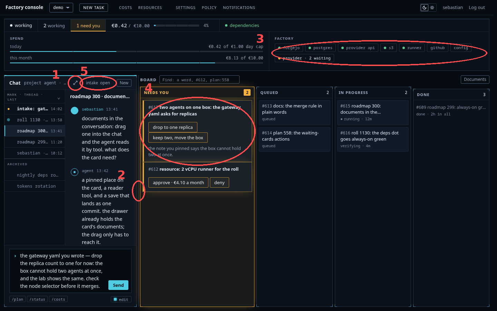
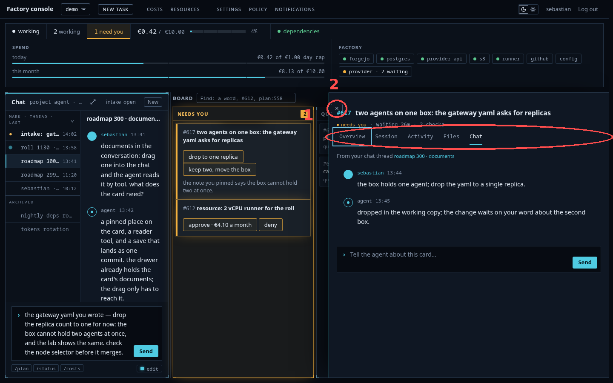
B — the tab pair (try it). 1 CHAT | THREADS: the tab swaps the conversation and the thread table; the conversation gets the panel's full width. 2 the same glyph toggle, full screen and back. 3 the same divider drag. The composer and tooltips work as in A.
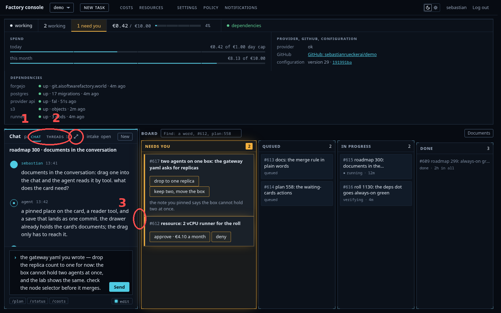
The composer crush, answered from the code
At the compact split the chat is 24 rem wide; the threads table takes 212 px of it, leaving the conversation column ~172 px. The composer lives inside that column as a flex row (.prompt, console.css:795), so its textarea is crushed to 34 px — Sebastian's screenshots show exactly this. The round's answer is organizational: the composer becomes the chat's third grid row, spanning threads and conversation alike (.chat.with-threads { grid-template-rows: auto minmax(0,1fr) auto }), and the thread table ends above it. Measured: the textarea grows from 34 px to 246 × 110 — five whole lines at the narrowest split, with no new token, no new color, no JS.
The seven directions
- d1-edge — the control lives on the divider: a hover grip with the expand glyph at its middle
- d1-full — the chat alone: a vertical "board" tab clings to the left edge; Esc also returns
- d2-head — the glyph toggle sits in the chat head beside the who-line; the glyph flips when full
- d3-tabs — the threads become a CHAT | THREADS tab pair (the C14 reversal question)
- d4-floor — the chat floor rises to 24 rem, the thread table tightens to 176 px
- d5-strip — d4 plus the panel's services collapse into one row of lamp chips, spend gauges kept
- d6-drawer — d4 plus the drawer carries Overview · Session · Activity · Files · Chat
Every candidate is a static page in the production console.css, drawn with the same busy content — four lanes, a five-line draft mid-composition, the panel open or compressed — and shot at 1440 and 390 in both themes. The style never moves; only the arrangement does. Each figure below is full width; click an image for the raw 1440 px PNG, or open a prototype — the real stylesheet, live at any window size.
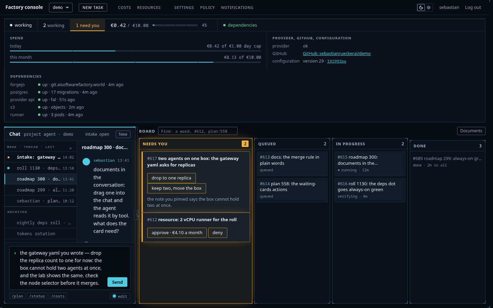
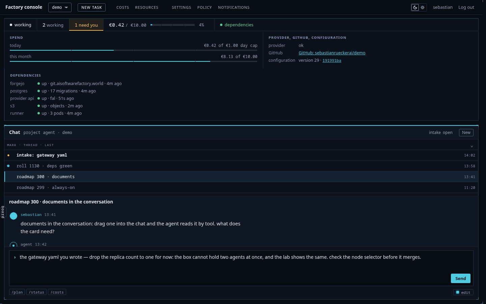
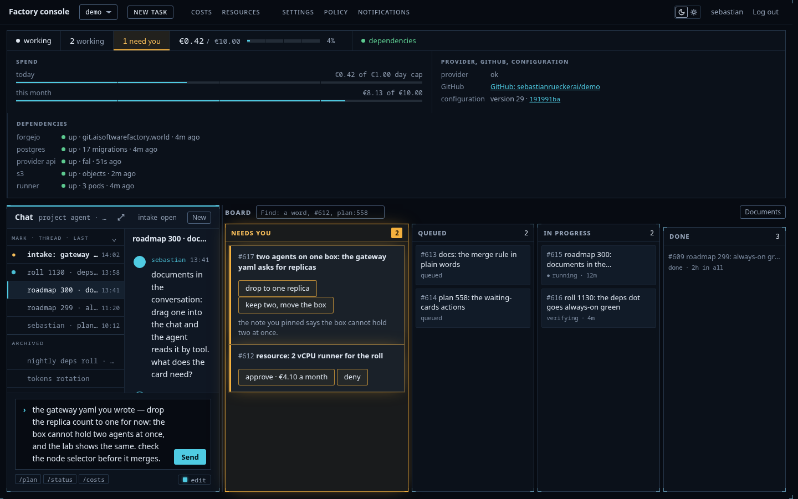
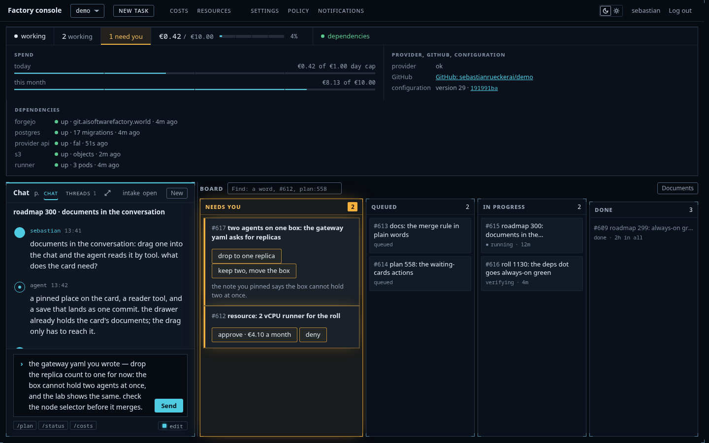
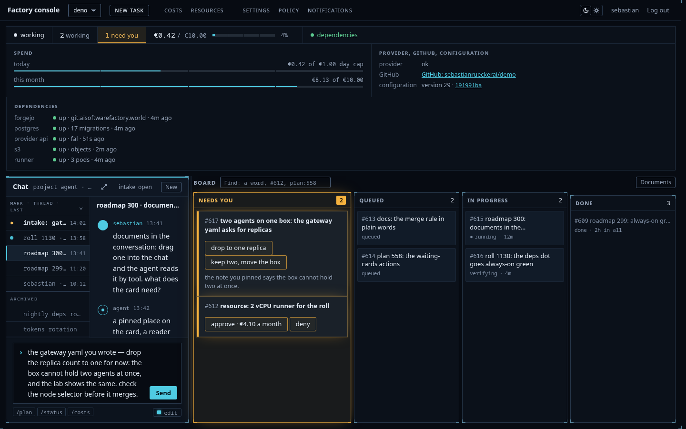
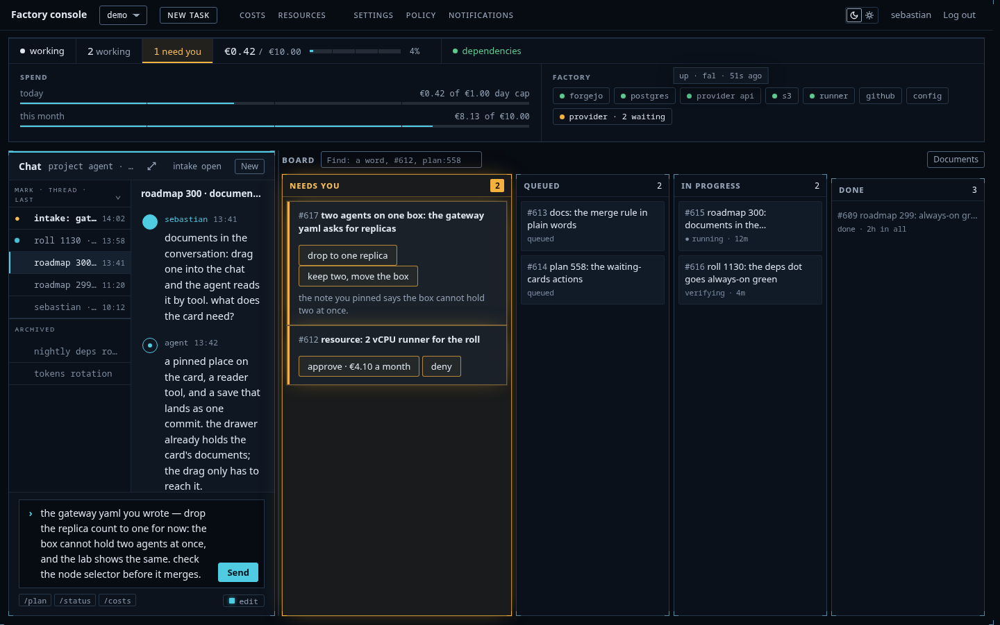
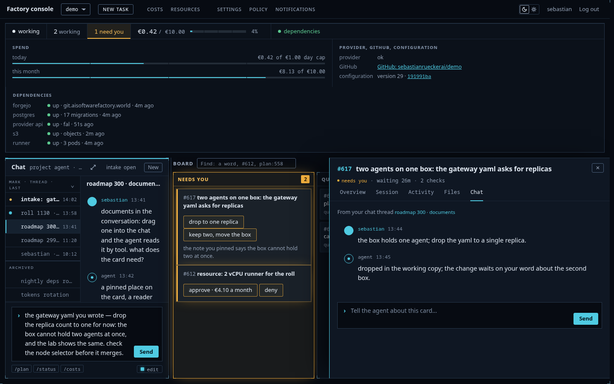
The breadth sheet
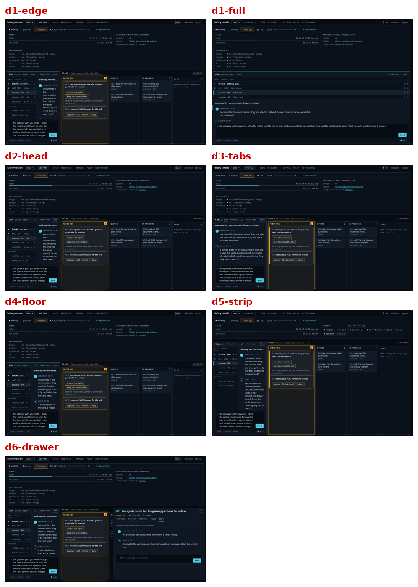
Critics, breadth pass
| rank | gemini | glm |
|---|---|---|
| 1 | d3-tabs | d3-tabs |
| 2 | d2-head | d1-edge |
| 3 | d6-drawer | d6-drawer |
| 4 | d1-edge | d2-head |
| 5 | d4-floor | d4-floor |
| 6 | d1-full | d5-strip |
| 7 | d5-strip | d1-full |
Both crown d3 on one argument: the tab pair gives the composer the panel's full width. Both put d6 third — the drawer's Chat tab earns its place twice. Gemni would drop d5; glm would drop d1-full as "a mode, not a layout".
Director's pixel pass and overrules
The critics judged contact-sheet cells; the candidates were also measured in the browser. Every "composer cramped, clipped, or absent" claim — d1, d2, d4, d5, across both critics — is disproven by the same geometry: the form spans the chat (13→395 against the chat's 12→396), the thread table ends exactly at the composer's top edge (709 = 709), the textarea is 246 × 110 with zero hidden overflow. Gemni's "d5 has no chat at all" and glm's "the chat collapses to a strip" are the same cell misread at sheet scale. Overruled.
Gemini's "d1-full returns via a '< FACTORY CONSOLE' back link" and glm's "back-chevron": no such element exists; the way back is the edge tab plus Esc. glm's "d4 extends the dock to the viewport floor": the floor is a minimum width, not a bar. Overruled.
And the measurement that decides the round: d3 and d5 give the composer the identical 246 × 110 box. The spanning move equals the tab pair where the critics thought d3 won; d3's remaining edge is only the wider conversation column (382 vs 206 px) — bought with the C14 reversal and threads behind a tab.
One finding kept from the misreads themselves: at the spanning composer, the threads column ends flush at its top-left corner, and even strong vision critics read that seam as "something sits beside the composer". The build adds a hairline above the thread table's end so the span reads clean at a glance.
Compare loop
Candidate A, the bundle: d5's compact rest plus d6's drawer — floor, spanning composer, head toggle, chips, drawer Chat tab. Candidate B, the single: d3's tab pair.
| critic | verdict | the one change asked |
|---|---|---|
| gemini | A | New button above the thread list |
| glm | A | draggable splitter or a wider floor |
Gemini: "the ability to maintain peripheral awareness of other threads … is not a luxury but a core requirement"; the chips "reduce noise, they do not create it"; the drawer chat is "not a second chat" but a scoped one. GLM: "the thread list is not a navigation menu — it is a secondary radar"; A keeps the mental place where B keeps only the physical.
GLM's strip judgment — chips as "noise" — was rendered on flipped images: it attributed A's chips to B and B's text rows to A. Overruled on the mapping; the substance half-stands as a build note: a down chip carries its age inline ("postgres · down 51s"); up chips keep dot · name with age on hover. Its "make the splitter draggable" asks for what exists — the divider drag with its hover grip; the 24 rem floor is round 10's settlement and stays.
Recommendation
A, the bundle. Both critics pick it on the workflow argument, not the cosmetics; its five moves are organizations in the pinned style, so nothing here restyles what round 10 settled; and it fixes the composer crush — a defect the current console ships — without moving the threads off the screen. d3-tabs stays the recorded alternative: pick it to reverse C14 and buy the wider conversation column, knowing the composer gains nothing the spanning move does not already give.
The build inherits, recorded: the hairline above the thread table's end; the New button above the thread list; inline age on down chips; Esc exits full chat; tooltips on the intake, the grip, the lamps; the full state holds the 48 rem reading measure with threads and conversation centered as a group.
Cost
$0.12 critics (4 runs) of the $1 cap; no image generation. Round time: one session, 2026-10-19.